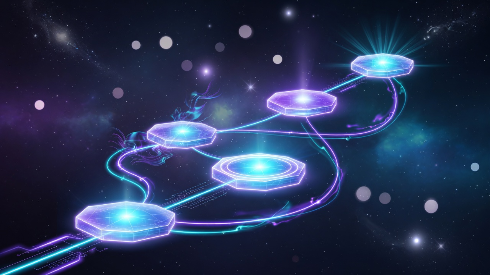

What you will learn
Install Grok Build, write clear goals, approve tools safely, and ship a mini game or app. Later: plan mode, MCP, scripts, and multi-session work.
Go from zero to confident with Grok Build—the AI coding tool in your terminal. Learn the basics, then build a tiny game or app with copy-paste prompts. After you ship once, unlock daily habits and advanced power tools.
New here? Install and prove Grok works. Returning? Your next incomplete lesson loads after scripts run.
Progress stays in this browser only. Opening a page means opened. Click Mark lesson complete after the lab. Early goals: (1) install works, (2) finish a game or app walkthrough.
Follow the steps in order. Success early on means: install Grok, then finish a First Ship walkthrough. Do not jump to Advanced until you have shipped once.
Still ship-first. Minimum path: Install → First Session → First Game walkthrough (or the app walkthrough). Glossary, Screen, and Keyboard help a lot—skip them only if you already know terminals, and come back when stuck.

Short lessons, copy-paste prompts, and checkboxes so you know when you are done. Built as an independent community guide for Grok Build—not an official Grok or xAI product.
Install Grok Build, write clear goals, approve tools safely, and ship a mini game or app. Later: plan mode, MCP, scripts, and multi-session work.
A computer, internet, and willingness to type a few commands. No programming, Git, or AI experience required—we explain each idea when you need it.
Plain definitions, “what you will see” notes, step-by-step labs, “if stuck” tips, and a clear Done when checklist.
Glossary → Install → First session → Screen → Keyboard → First ship → Intermediate → Advanced → Mastery.
After install, your first session, the screen lesson, and keyboard basics—pick one guide and finish it. Each step includes prompts to copy and prompts to avoid.

WASD move, one enemy, Space attack, win/lose, restart. Opens as index.html—no game engine.

Add, complete, filter, and delete tasks with browser save. A real micro-product, vanilla HTML/JS.
Start app walkthroughComplete Getting Started, Your First Session, The Grok Screen, and Keyboard Basics first—or at minimum Install + First Session if you are in a hurry.
Do not start here. Finish Beginner and one ship walkthrough first. Then Intermediate and Advanced cover:
Design before edits; project rules every session inherits.
Modes · allow/deny · OS sandbox—three layers.
Reusable playbooks and external app tools.
CI scripts, ACP, multi-session overview.
 Safety · systems · scale
Safety · systems · scale
Each card lists its lessons. Use the full path list below if you prefer a single checklist.
 History above · type below
History above · type below
Marks below show opened vs complete on this browser (saved locally only).
This site holds your hand. For exact flags after a Grok update, use in-app
/docs, /tutorial, and files under ~/.grok/docs/user-guide/.